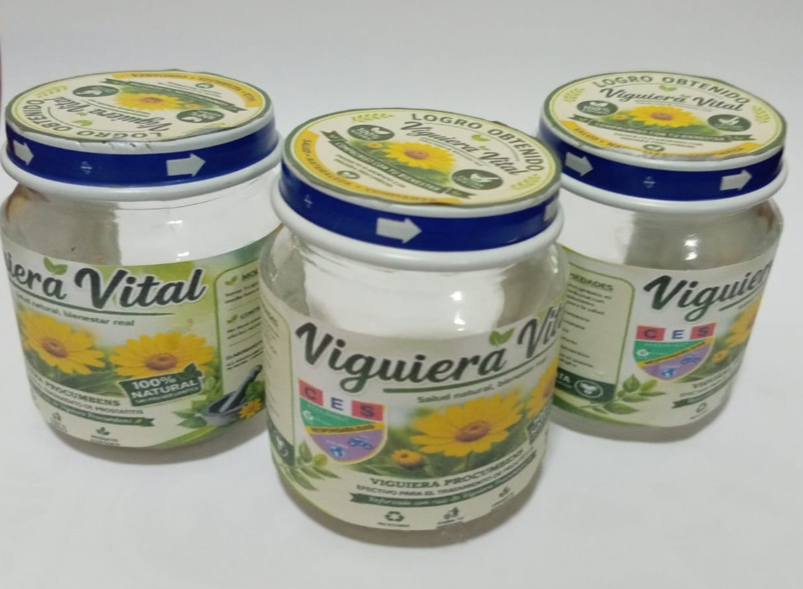

La planta
Viguiera procumbens es mencionada como sinónimo biológico de Aldama helianthoides. En el ámbito de los productos naturales y la fitoterapia, sus extractos encapsulados pueden comercializarse bajo nombres específicos, como Prostabien.
Investigación escolar sobre Viguiera procumbens y su relación con productos naturales para el cuidado de la próstata.

Investigamos una planta.
Organizamos la información
para comprender su uso responsable.
Viguiera Vital estudia qué se conoce sobre Viguiera procumbens, cómo se presentan sus extractos y qué precauciones deben acompañar cualquier información sobre prostatitis.
Pregunta central: ¿cómo comunicar sus posibles usos sin reemplazar la orientación médica?
Una exploración sobre la planta Viguiera procumbens y su presencia en productos naturales para la salud masculina.
Información educativa: la prostatitis es una inflamación que requiere valoración médica. Este contenido no sustituye el diagnóstico ni el tratamiento indicado por un profesional.
Viguiera procumbens es mencionada como sinónimo biológico de Aldama helianthoides. En el ámbito de los productos naturales y la fitoterapia, sus extractos encapsulados pueden comercializarse bajo nombres específicos, como Prostabien.
Los extractos naturales se presentan como coadyuvantes terapéuticos. No reemplazan los antibióticos cuando existe una prostatitis bacteriana aguda. Su uso consiste en ingerir regularmente los principios activos según la concentración y las indicaciones del producto.
Tradicionalmente se relaciona con una acción antiinflamatoria, un posible efecto diurético y apoyo para molestias urinarias leves. La respuesta puede variar y estos efectos no sustituyen una evaluación clínica.
La metabolización depende del organismo y de la formulación. Al ser un producto vegetal, los efectos no necesariamente son inmediatos y cualquier uso prolongado debe revisarse con un profesional.
Algunos extractos vegetales pueden intensificar temporalmente el color de la orina hacia tonos amarillentos o anaranjados. Consulta a un especialista para diferenciar una prostatitis de otras afecciones urológicas y recibir el manejo adecuado.
Así organizamos la investigación de Viguiera Vital para explicar su contexto, uso y límites.
Reconocer Viguiera procumbens y su relación con Aldama helianthoides y la fitoterapia.
Revisar cómo se presentan los extractos y distinguir el uso tradicional de la atención médica.
Ordenar modo de uso, duración, conservación, posibles efectos y advertencias.
Presentar información educativa clara sin prometer curas y destacando la consulta profesional.
Organizamos los hallazgos de Viguiera Vital para diferenciar información tradicional, evidencia y orientación médica.
Se presenta como un sinónimo biológico de Aldama helianthoides. Este dato permite ubicar la planta antes de interpretar cualquier producto que la contenga.
En fitoterapia pueden comercializarse bajo nombres específicos. La etiqueta y la concentración determinan cómo debe leerse cada producto.
Un suplemento no sustituye antibióticos ni atención médica cuando existe una prostatitis bacteriana aguda.
Molestias urinarias, flujo disminuido o necesidad frecuente de orinar requieren diferenciar la causa con un especialista.
Los posibles efectos asociados deben comunicarse con cautela y sin prometer una cura.
¿La información explica el producto sin sustituir una consulta médica?
Somos estudiantes con preguntas distintas y una misma energía: aprender haciendo.
Volver al inicio